5 Employment and Income
#Covid edit
5.1 Employment
Key Points
- Santa Barbara County’s total employment for all industries grew by 12,215 jobs in 2021, a gain of 5.99%.
- The unemployment rate decreased in 2021, falling by 3.89 percentage points to 4.14%. Goleta has the lowest unemployment rate in the county at 3.99% and Santa Maria has the highest unemployment rate in the county at 8.49%.
5.1.1 Santa Barbara County Employment
Santa Barbara County’s total employment for all industries continued to grow in 2021. Total Employment increased from 214,383 jobs in June 2021 to 222,810 jobs in June 2022. This gain of 8,427 workers represents an increase of 3.9%, which is lower than the previous year’s growth rate of 6.96%. Since December of 2012, Santa Barbara County has a net gain of 30,028 jobs, averaging an increase of 3,002 jobs each year. This is sign that the labor markets in Santa Barbara County are healthy.
Nonfarm payroll in California increased in 2021, at a rate of 6.65%. Since December of 2012, nonfarm payrolls have increased in California by 15.2%. United States nonfarm payroll has also increased at a rate of 4.75%. This is significantly higher than the 2020 growth rate of -6.15%. Santa Barbara’s nonfarm payroll growth increased by 5.36%, which is slightly lower compared to California. This is higher than the 2020 growth rate of -6.67%. Nonfarm payroll is indexed to July 2009, and since the end of the recession, Santa Barbara’s nonfarm payroll gains (18.42%) have been higher than the Unites States’ (16.45%), but significantly lower than California’s (22.51%).
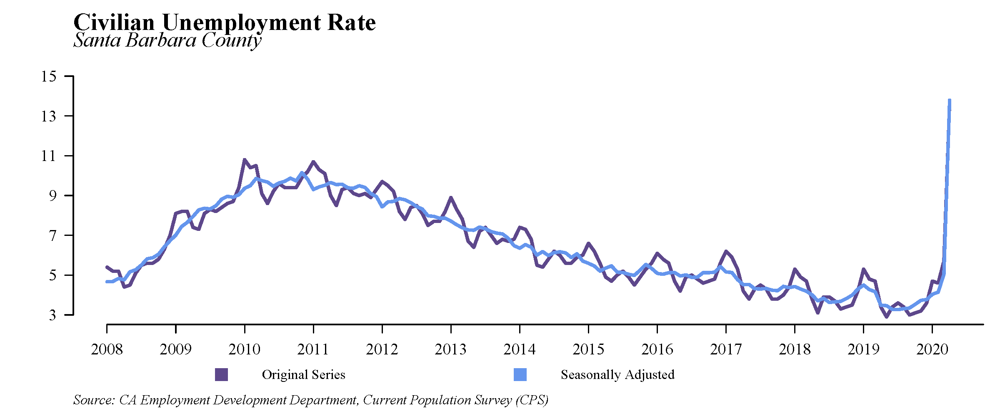
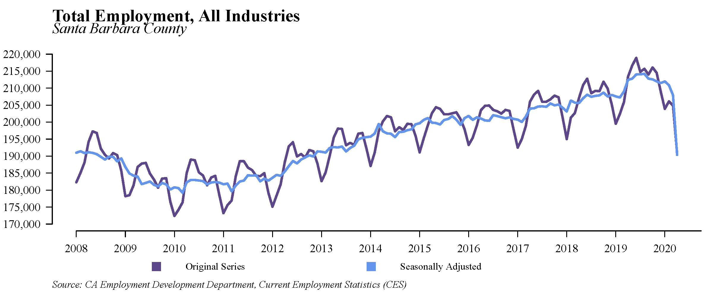
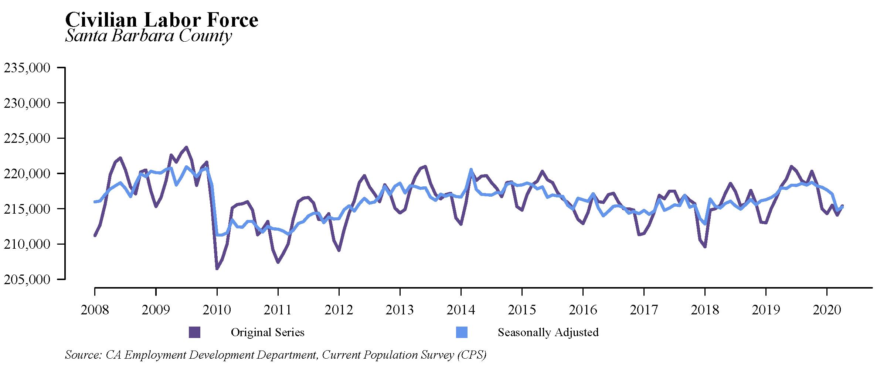
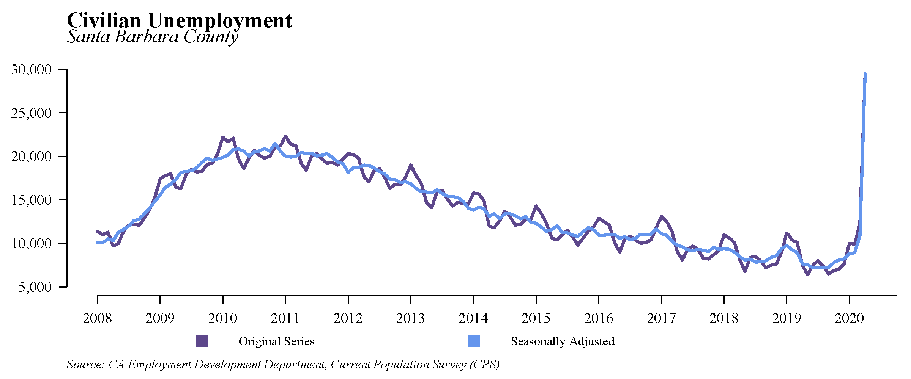
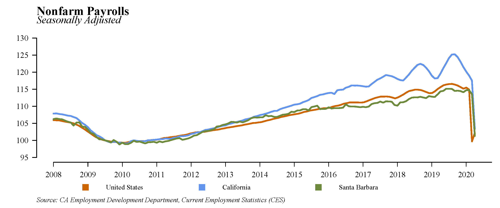
The number of unemployed workers and the unemployment rate has also improved in the past year. The unemployment rate dropped from a peak of 14.6% in May 2020 to, based on the most recent data, 3.1% in June 2022. The number unemployed, defined as workers who are without work and are actively seeking work, has declined from a peak of 31,241 in May 2020, to 12,527 in June 2021, and then down to 6,904 in June 2022. This drop of 5,623 unemployed workers in the past year represents a decline of 44.9%. The declines in both variables have been gradually slowing down as the labor market returns to so-called “full employment”, loosely defined as the lowest possible level that will not cause inflation. If unemployment falls significantly, inflation will rise as employers compete to hire workers and push up wages too fast. The size of the labor force in Santa Barbara County has increased from June 2021 to June 2022 by 3,091 workers. This is a small increase of 1.41%.
5.1.2 Industry Data
The next three figures show employment growth for 12 industries in Santa Barbara County over the past year, three years and ten years. The height of each bar shows the growth rate and the width shows the percent of total employment for each industry for 2018, 2016, and 2009 respectively. Leisure and Hospitality had the largest employment growth with a 11.7% growth rate over the past year. Retail Trade saw the largest employment decline of -1.7% over the past year. Government remains the largest industry by employment, with 16.3% of total employment, followed by Professional and Business Services (15.6%) and Education and Health Services (12.4%).

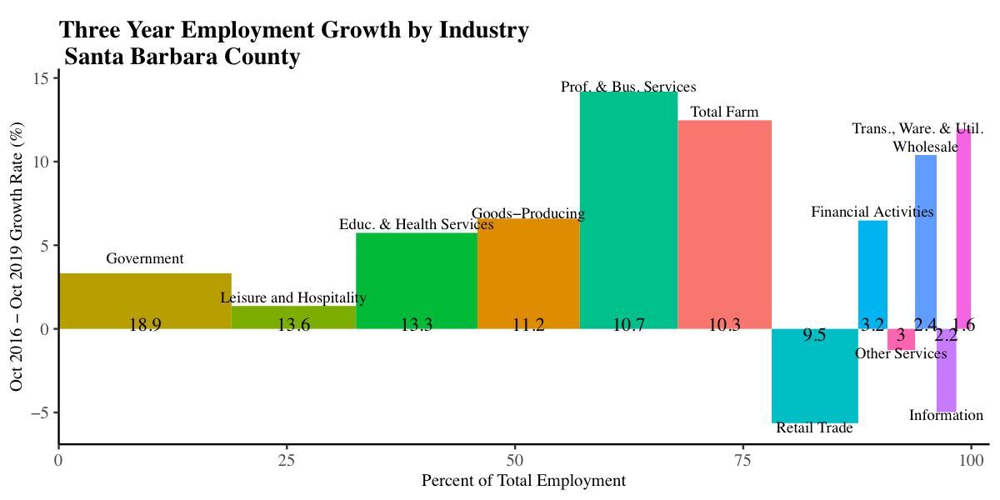
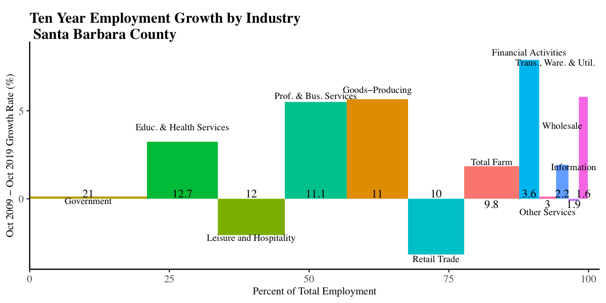
Over the past three years, Professional and Business Services saw the largest increase in employment, with a three-year growth rate of 18.4%. Government and Leisure and Hospitality have seen employment declines over the past three years with declines of 6.3% and 5.5% respectively.
Since 2012, the percent of total employment for most industries has not significantly changed. Professional and Business Services has grown the most, as it now has an employment share of 15.6%. Total Farm has increased its employment share from 10.3% to 12% as it now has the fifth largest employment share.
Employment shares by industry have generally stayed the same within the past twenty years. The largest increase since 2002 is in the Professional and Business Services industry, as their employment share has rose from 11% to 15.4%. Goods Producing, Government, Retail Trade, Manufacturing, and Financial Services have seen small declines since 2002.
The figures below depict the employment time series for the following industries: Total Nonfarm, Total Farm, Goods Producing, Services Providing, and the six largest 2-digit industries in Santa Barbara County. The dark blue line shows the original data series reported by the California Employment Development Department (EDD), and the light blue line shows the seasonally adjusted data that the EFP has created. Some industries’ employment, like Total Farm, Leisure and Hospitality, Government, and Retail Trade, appear to be highly seasonal. Other industries, like Manufacturing and Education and Health Services, have almost no seasonal component. Employment in Leisure and Hospitality, Education and Health Services, and Professional and Business Services are all enjoying upward trends over this period. Employment in Goods Producing and Manufacturing has also seen recent upward trends after realizing declines after the Recession. Employment in Retail Trade has been declining since peaking in 2015.
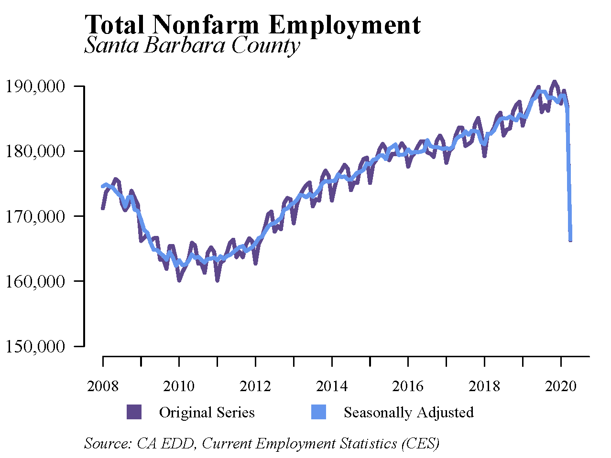
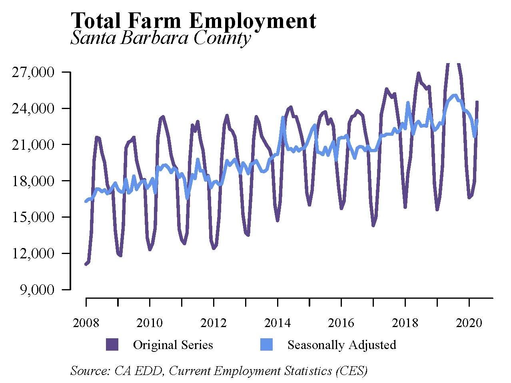
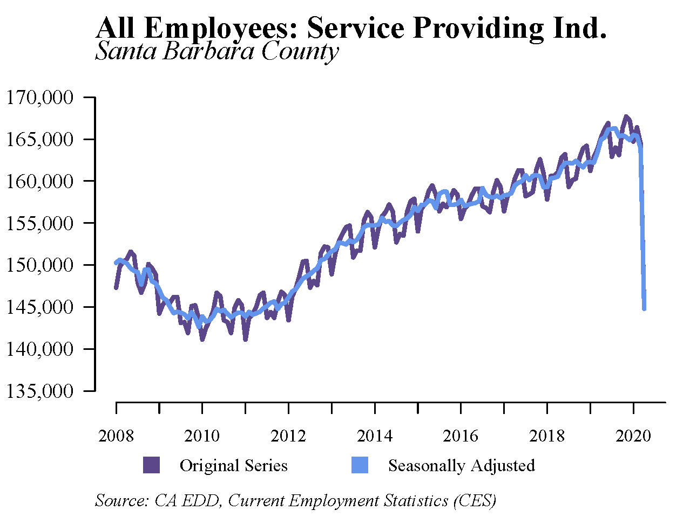
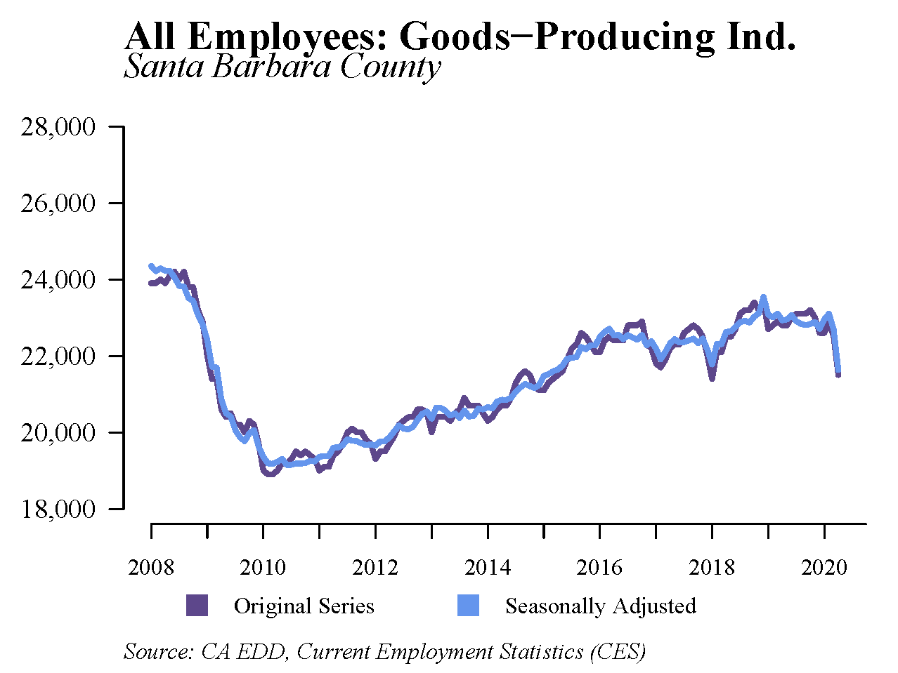
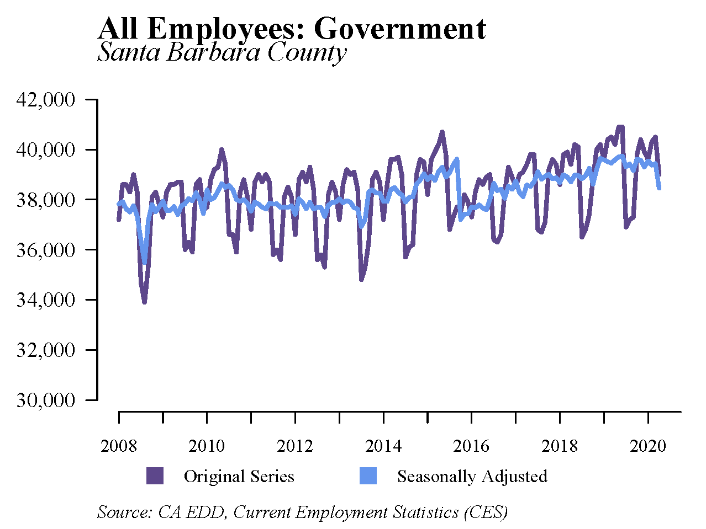
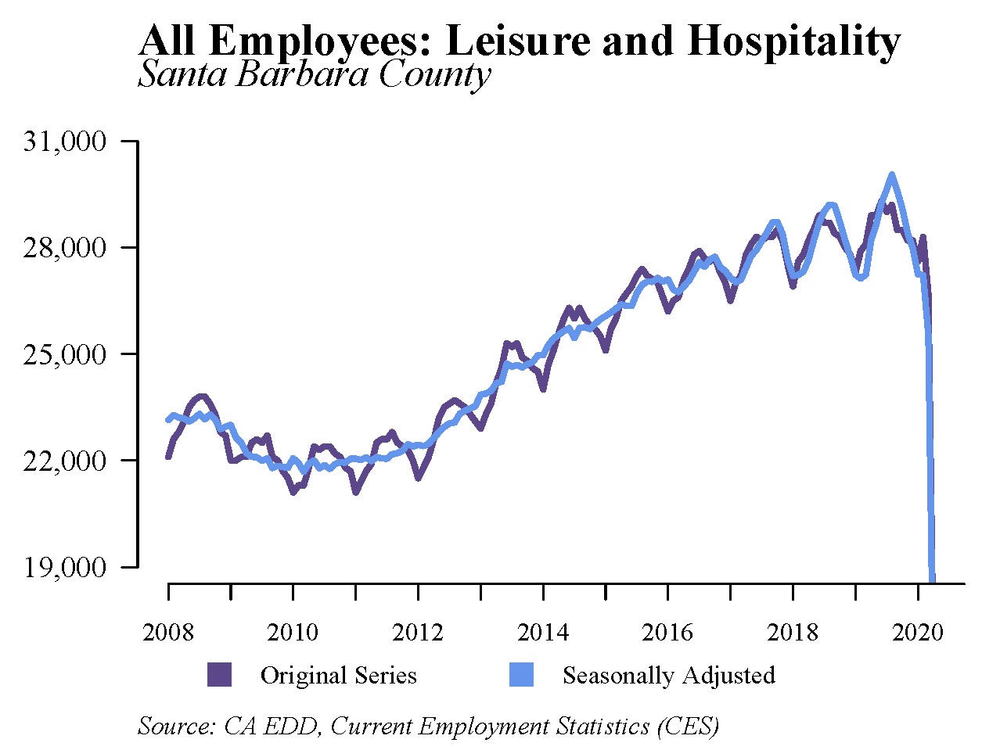
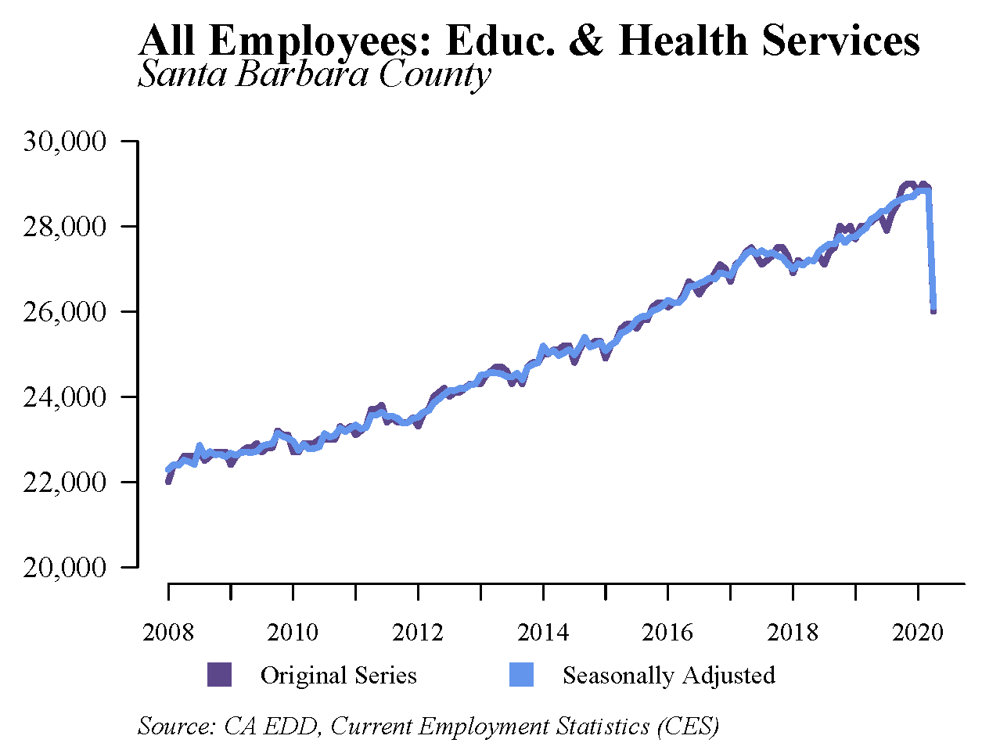
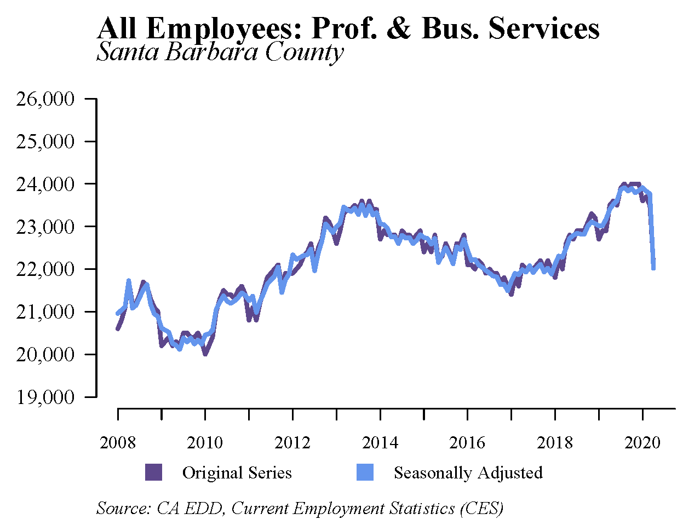
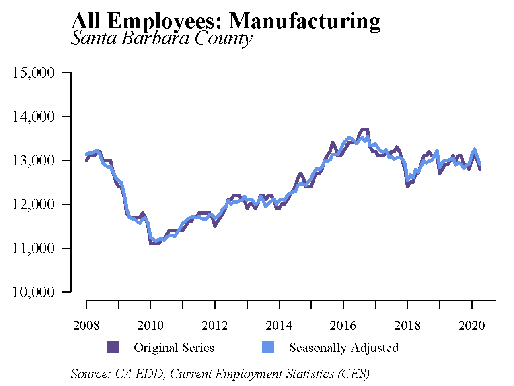
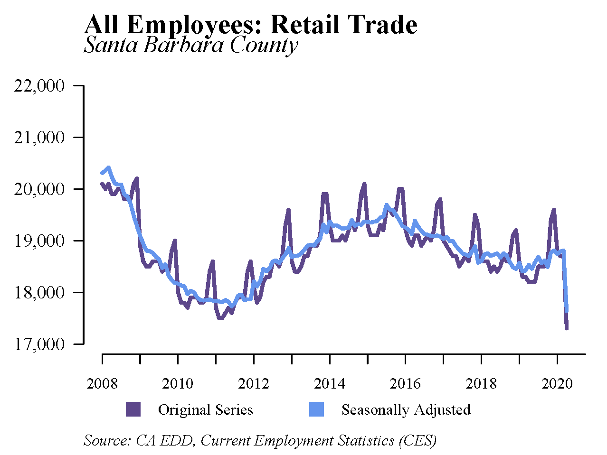

5.1.3 City Data
Santa Barbara County is comprised of cities with diverse industry mixes and economic conditions. North County, which includes five cities (Buellton, Guadalupe, Lompoc, Santa Maria, and Solvang) and five census designated places (Los Alamos, Mission Hills, Orcutt, Santa Ynez, Vandenberg AFB, and Vandenberg Village), is typically poorer, has higher unemployment rates, and is more agricultural than South County. However, Buellton and Santa Ynez are exceptions to the first two of these differences. South County includes three cities (Carpinteria, Goleta, and Santa Barbara) and five census designated places (Isla Vista, Mission Canyon, Montecito, Summerland, and Toro Canyon). The following paragraphs will document differences in employment, unemployment rates, and industry mixes across cities.
Current unemployment rates are highest in Lompoc (6.84%), Solvang (5.26%), and Santa Maria (6.18%). Unemployment rates are lowest in Buellton (3.3%) and Goleta (3.35%). Unemployment rates in the other cities in the county range between 4.54% to 5.07%. Unemployment rates in all areas have declined significantly since 2010, when several North County cities had unemployment rates around 12%.

Industry employment differs substantially from city to city. We show the industry employment mix for each area in the figure on the next page. The length of the bar represents the percentage of an area’s employment coming from a particular industry. Some of the interesting facts that appear in this data are:
- Goleta has the largest share of employment in Durable Manufacturing at 11.81%. Carpenteria’s employment share in this industry has been increasing and it now has the second largest share at 9.8%.
- Government accounts for more than 20% of the employment distribution in all cities except in Santa Maria, Carpinteria, and Santa Ynez Valley.
- All cities have a small employment share in the Mining and Financial Services industries, as the employment shares lie between 0.95% an 2.7%
- Leisure and Hospitality have large employment shares in Santa Barbara and Santa Ynez Valley, although it has declined due to the pandemic. In Santa Ynez it is responsible for 18.74% of all employment.
- Agriculture, Forestry, Fishing & Hunting is the largest industry based on employment in Santa Maria, with 32.86% employment in this one industry.
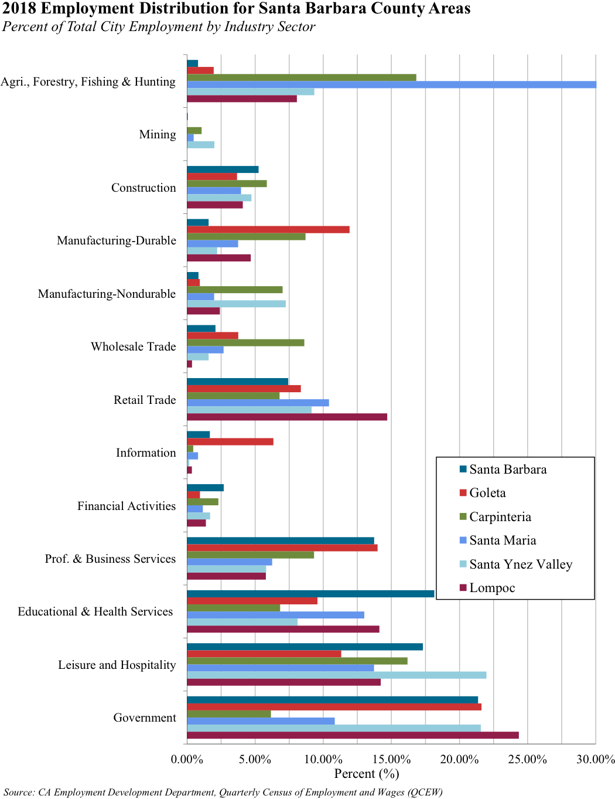
5.1.4 California Counties
Labor markets all across California vary significantly as counties labor markets are dependent on their geographical region. Santa Barbara’s labor market compares well to most counties in California. However, they aren’t as strong as some counties in Northern California, and specifically those counties in the Bay Area. This section will provide some data and a map visualization to show how labor markets differ across California’s 58 counties.
Santa Barbara’s unemployment rate (2.73%) is above average relative to other California counties. Santa Barbara has the 11th lowest unemployment rate between all California counties. The county with the lowest unemployment rate is San Mateo (1.85%), which is part of San Francisco’s Bay Area. The top four counties with the lowest unemployment are all from Northern California: San Mateo (1.85%), Marin (2.03%), San Francisco (2.13%), and Santa Clara (2.04%). The three counties with the highest unemployment rate in the state are Imperial County (12.2%), Colusa County (8.9%), and Tulare County (7.1%). These counties also had the largest unemployment rates in 2020 as well. No other California counties have unemployment rates above 7%. Most California counties’ unemployment rates fall between 3% and 5%.
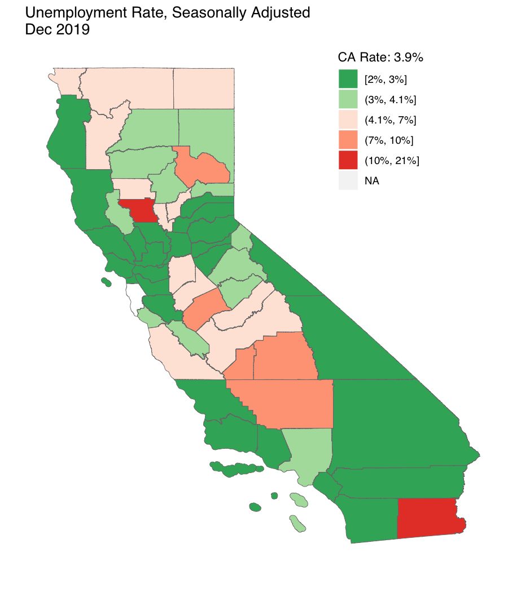
All California counties saw a decrease in their unemployment rate compared to 2020 levels. Imperial County saw the largest decrease in the unemployment rate (-6.13 percentage points) followed by Los Angeles County (-5.55 percentage points).
Santa Barbara’s nonfarm payroll grew by 5.2%, which is higher than the majority of California counties. Santa Barbara had the 11th highest growth rate in the state, in contrast to recent years. The strongest growth in nonfarm payroll were in Mono County (16%), San Diego County (6.2%), Fresno County (6.2%), and Tulare County (6.1%). Several counties had declines in nonfarm payrolls over the past year, led by Alpine County (-15.8%) and San Mateo County (-12.9%). Eleven counties saw nonfarm payroll grow over 5% annually.
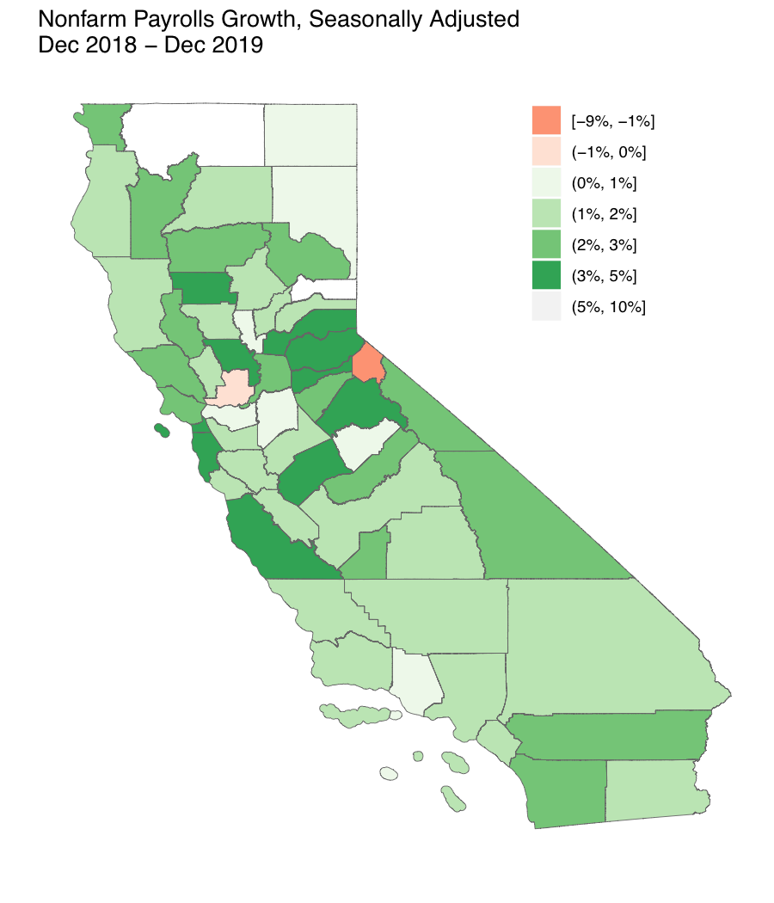
5.1.5 Firm Size Data
Since 2011, firm size distribution in Santa Barbara has remained relatively the same. In 2021, the most common number of employees at a firm in Santa Barbara is between 20-49 employees, and this has been unchanged since 2011. Even though it is still the most common number of employees, the proportion of firms with this range of employees has decrease from the 2011 level of 20.4% to 19.1% in 2021. Firms with 50-99 employees saw the greatest decline in firm size distribution since 2008. In 2008, firms with 50-99 employees accounted for nearly 15% of firm size distribution, where in 2018; these firms only account 12.5% of firm size distribution.

In 2021, firms with 100-249 employees had the largest average payroll expenditure per employee at $16,869. Looking across all different firm sizes, we can see that payroll per employee has increase in every firm size category. The largest changes in payroll per employee were in firms with 100-249 employees and firms with 10-19 employees. These firms saw payroll per employee increases of 47.5% and 37.6% respectively.

In Santa Barbara County, 39.9% of employees work for firms that employ over 100 workers. This is 5.3 percentage points less than California, where 45.2% of employees work for firms with over 100 workers. These numbers have converged in recent years. We can also see that in Santa Barbara County most Retail Trade Services employees work for firms with 20-49 employees, while most Agriculture employees work for larger firms.
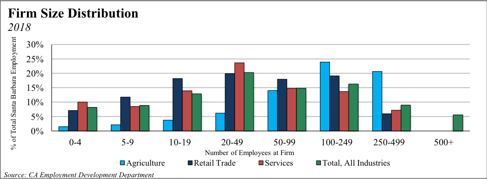
Santa Barbara County’s firm size distribution difference between California’s is the proportion of workers in small businesses. For California, 55.6% of employees work in firms with less than 100 employees. The distribution is much larger in Santa Barbara County, where 60.1% of employees work in firms with less than 100 employees. Besides the difference in employee distribution in firms with less than 100 workers, Santa Barbara County and California’s firm size distribution are similar. The only major difference is in firms with 1000+ employees, as 15.3% of California employees work in firms of the largest size. Only 10.3% of Santa Barbara employees work in firms with 1000+ workers, although this number is significantly larger than it has been in recent years.
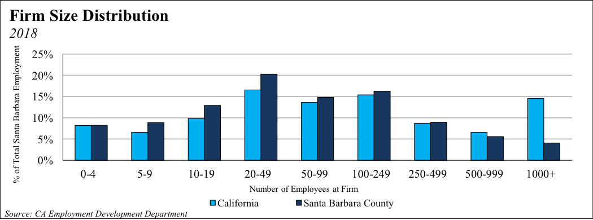
5.2 Employment Forecast
Key Points:
- Nonfarm Payrolls are expected to grow at a rate of 4.53% in the upcoming year, an increase of 8,604 jobs. While this growth rate is high by historical standards, it is lower than the 8.9% growth observed in 2021.
- Our statistical forecast suggests a December 2022 unemployment rate of 2.58%, a decrease of 1.32 percentage points compared with December 2021. The 95% confidence interval spans from a low of 1.98% to a high of 3.38%.
The forecasting methods used in this section are based on the Census Bureau’s X-13ARIMA-SEATS seasonal adjustment program. Their program can be used to forecast a series using only its statistical features. Each employment series has a seasonal component (the December effect for retail trade is one example), a trend component (like the long-run downward trend in goods-producing industries or a multi-year recession), and an irregular component (a one-month bump or decline in the series for reasons that will not occur again, like the 2012 Olympics producing a one-month bump in the London economy). After decomposing a time-series into these three components, the current trend component and seasonal component can be used to forecast the series. While the irregular series cannot be predicted, since it has an expected value of zero, and systematic changes to the trend and seasonal components also cannot be predicted, the history of how these components have varied in the past can be used to generate confidence intervals.
Each figure in this section shows the recent unadjusted and seasonally adjusted series followed by a three-year forecast. This forecast describes the most likely values for the unadjusted series. The dashed lines surrounding the forecast describe the 95% confidence interval. There is a 5% chance that values will occur outside of these dashed lines. Unless otherwise noted, each of the following year-over-year projections that we describe in the text will be between January 2022 and January 2023 for the unadjusted series.
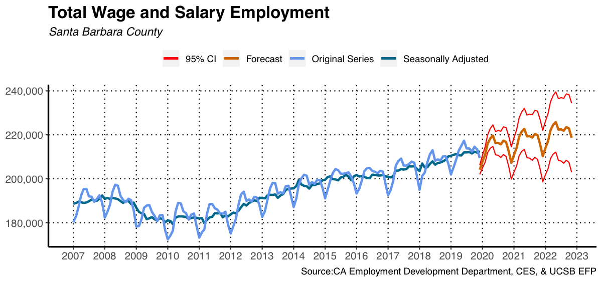
Total employment for all industries is projected to continue improving over the next three years. In 2022, our statistical forecast predicts a gain of 8,604 jobs (4.53%). This is lower growth than the very high rate of 8.9% seen in 2021. The 95% confidence interval for the growth rate ranges from 1.46% to 7.71%. Overall, in the next three years, we are expected to see average annual gains of 7,479 jobs per year and an average annual growth rate of 3.8%.
The unemployment rate over the next year is projected to continue its recent downward trend. Between December 2020 and December 2021, the unemployment rate declined by 3.48 percentage points. Our forecast predicts a further decline over the next year, with the unemployment rate declining to 2.58%, a decline of 1.54 percentage points between December 2021 and December 2022. The confidence interval includes possible unemployment rates between 1.98% and 3.38%.
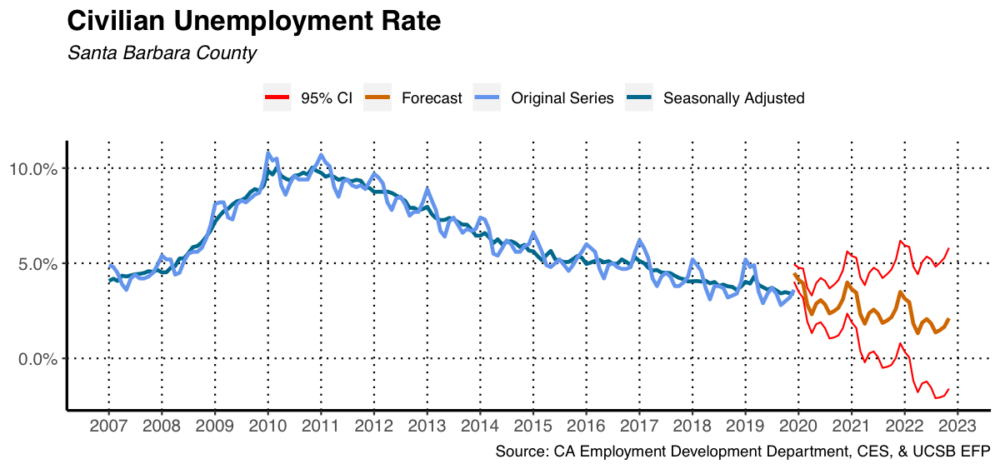
Among industries, the X-13 statistical forecast expects growth in all the industries we depict in the following two pages. Of these industries, retail is expected to have the weakest performance, expecting to grow by 1.9%, and leisure and hospitality employment is expected to have the largest growth rate, increasing by 9.7%. The growth in farm employment is expected to continue for the next three years, with an average annual growth rate of 2%.


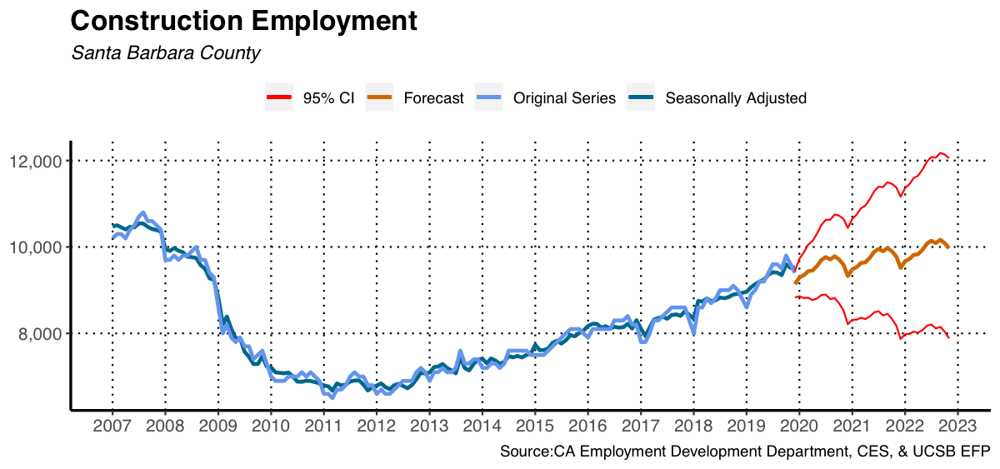

5.3 Occupations
The largest occupation in Santa Barbara County is Office and Administrative Support with 26,210 workers. Between 2021 and 2022, this occupation increased by 4,880 jobs. This occupation is one of lower paying jobs among the top ten largest occupations in the county, with a mean annual wage of $50,389. The lowest-paying occupation among the top ten largest occupations is Food Preparation and Serving-Related Occupations, with a mean annual wage of $38,101. Only two of the top ten largest occupations, Management and Healthcare Practitioners and Technical Occupations, have a mean annual wage above $100,000. Legal Occupations, which was not among the top ten largest occupations in 2018, have the next highest mean annual salary of $124,371 in quarter 1 of 2022.
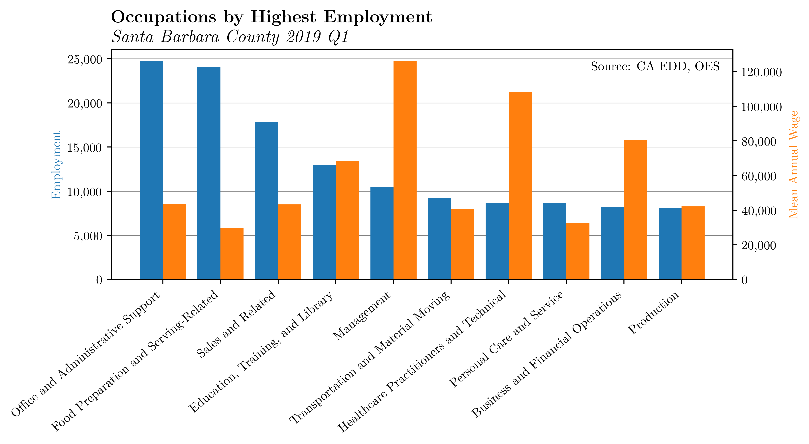
Within the county, the vast majority of jobs only require high school or less with minimal training (61,000). This group comprises 48.7% of the jobs in the county that have reported education and training requirements. The second largest education group is bachelor’s degree with no experience (20,110). Only 26.1% of jobs in the county require a bachelor’s degree or more. Recent employment projections, described in the 2019 Economic Forecast Project book, suggest that this employment composition will remain constant over the next ten years, with the vast majority of new jobs having minimal educational and training requirements.
Among education groups, the jobs requiring a Doctoral or professional degree have the highest median annual wage at $138,677, closely followed by jobs requiring a Bachelor’s degree with some work experience ($131,599). For the most part, education & training groups with more requirements pay more, except for postsecondary non-degree award jobs. High school or less with minimal training jobs pay the lowest median annual wages ($36,680). This is 32% less than the second lowest education & training group, high school or less with moderate training, and 58% less than the median annual wage for a bachelor’s degree with no experience.
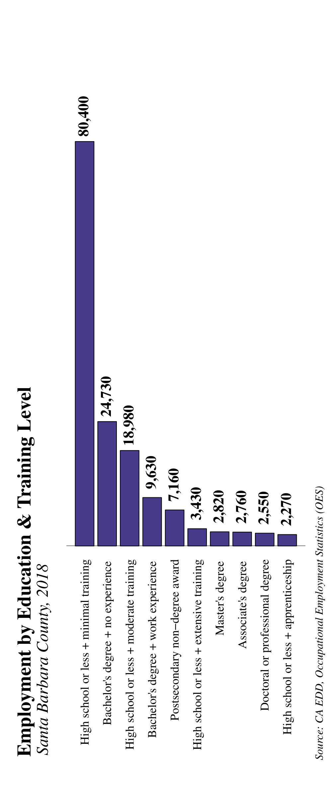
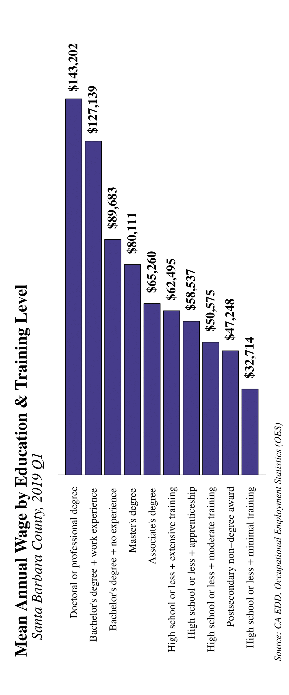
In addition to providing data for individual occupations, the Occupational Employment Statistics (OES) also aggregates occupations into 22 occupation groups. A summary of the data for these occupation groups is provided in the following pages. Office and Administrative Support is the largest occupation group, with 26,210 jobs, and Food Preparation and Serving-Related Occupations is the second largest group, with 22,240 jobs. Food Preparation and Serving-Related Occupations saw a significant 17.8% employment increase in 2021. The occupation group that saw the largest increase in employment is the Personal Care and Service Occupations group. This group saw employment increase by an impressive 4,890 jobs, which is a 125.7% increase from 2021. This is likely the result of this sector rebounding from the COVID-19 pandemic. Annual wages for the majority of occupations increased in 2021, with the exception of four occupation groups. Computer and Mathematical Occupations had the largest wage increase of 13.4%. There was also strong growth in mean annual wage among Legal Occupations and Protective Service Occupations, each of which saw a gain of 12.9%.
The summary statistics table also displays the log 75-25 wage ratio. This represents the log of the ratio of the 75th percentile hourly wage within an occupation to the 25th percentile hourly wage. This is a commonly used measure of wage dispersion. Farming, fishing, and forestry has the lowest 75-25 ratio, at 0.09, meaning the majority of workers in this occupation earn a wage close to the mean wage of $16.47 per hour. The group with the most wage dispersion is Protective Services Occupations, which includes police officers, firefighters, and detectives, among other occupations.
5.4 Income
Key Points:
- Real per capita income in Santa Barbara County rose in 2020 at 8.65%.
- A 9.16% growth rate of California’s real per capita income in 2020 resulted in a per capita income of $58,941, which is slightly higher than Santa Barbara’s real per capita income of $57,189.
- The number of families in poverty in Santa Barbara county is estimated to have declined by about 5.1% in 2021
- Guadalupe experienced the highest median income growth rate in the Santa Barbara County, at 11%.
Santa Barbara County’s real per capita income increased in 2020, from $52,637 to $57,189. The real per capita income growth rate in 2018 was 8.65 %, which is higher than the previous year’s growth of 1.28% (The BEA has adjusted its calculations of previous years’ per capita income since our last publication). The rate of growth in Santa Barbara was below California’s growth for 2020, 9.16%, but above that of the United States, 5.68%. US, California, and Santa Barbara County real per capita growth all accelerated in 2020. California grew from 2.73% to 9.16%, and the state’s real per capita income remains above Santa Barbara County’s real per capita income- this trend has been true since 2016.
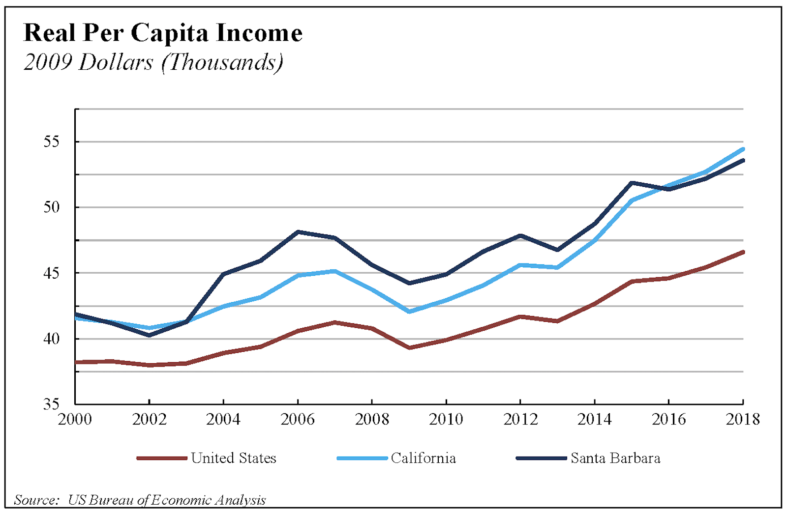
Per capita net earnings make up the majority of per capita personal income in the United States, California, and Santa Barbara. Per capita net earnings describe wages and salaries, supplements to wages and salaries (employer contributions to pensions and insurance funds), and proprietors’ income less contributions for government social insurance and an adjustment to convert earnings from place of work to place of resident. In California and the United States, this component represents about 62% and 60% of per capita income respectively. However, in Santa Barbara, this component only represents 56% of per capita income.
 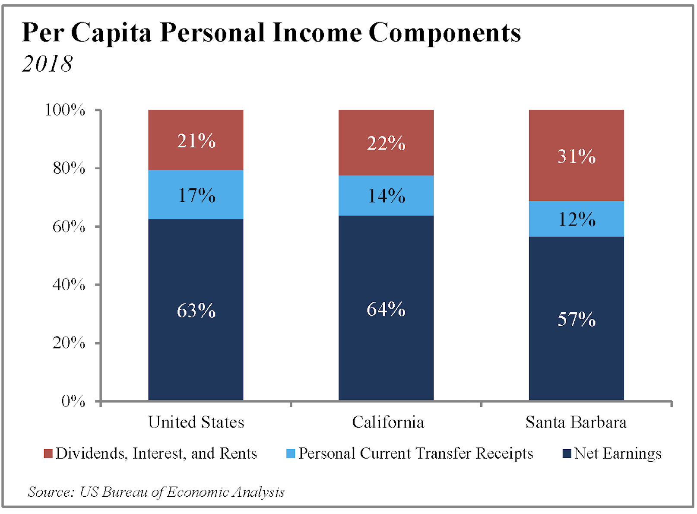
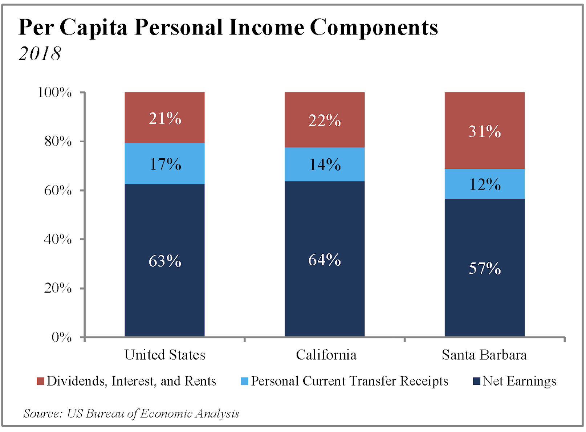
The second largest factor in per capita income is formed by dividends, interest, and rent. Dividends, Interest, and rent made up 26% of Santa Barbara’s per capita income, 18% of California’s, and 18% in the United States in 2020. This difference can be attributed to Santa Barbara County’s unusually high income distribution; wealthier people typically earn a higher proportion of their income from investments, which produce dividends, interest, and rents, than lower-income people.
Hourly wages in Santa Barbara grew nominally by 1.1% in 2021, from $29.35 to $31.03. Real wages for workers in Computer and Mathematical Occupations and Legal Occupations grew the fastest over the past year, with growth rates of 8.27% and 7.90% respectively. Within the county, Production Occupations experienced the largest real hourly wage decline from 2020 to 2021, losing 7.36%. Management occupations continue to have the highest real wages in 2020 at $51.18 per hour compared to the average across all occupations of $25.76.
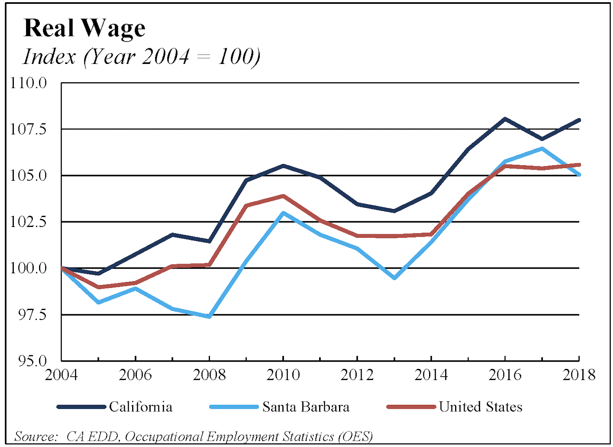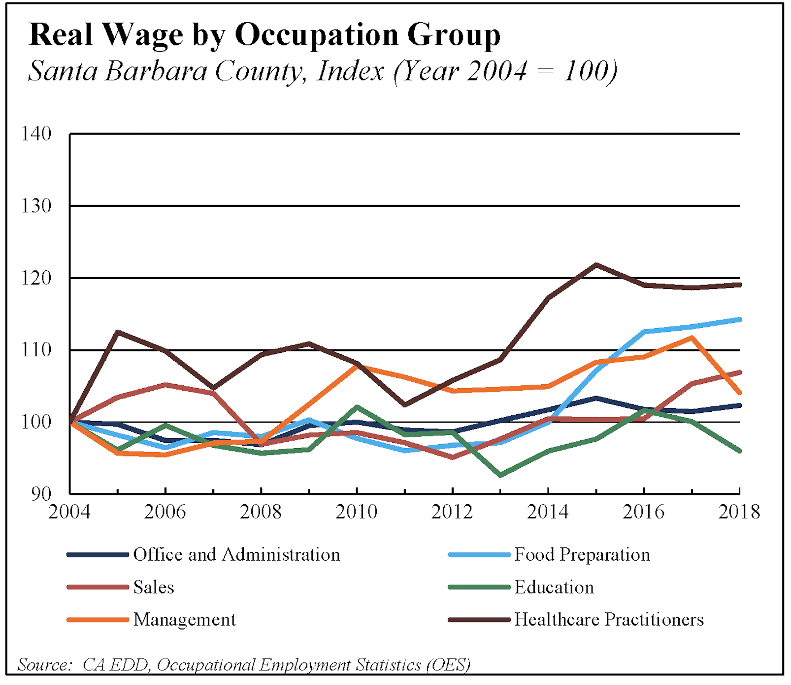
SiteReports provides the Economic Forecast Project with data to look at income distributions across Santa Barbara County. In 2022, the amount of families below the poverty line declined in Santa Barbara County from 7,011 to 6,596 for a 5.1% decrease. The number of families under the poverty line is disproportionally located in North County, which experienced a decrease from 4,728 in 2021 to 4,286 in 2022. South County, however, saw an increase in families under the poverty line of 18 families – 2,261 in 2021 to 2,279 in 2022.
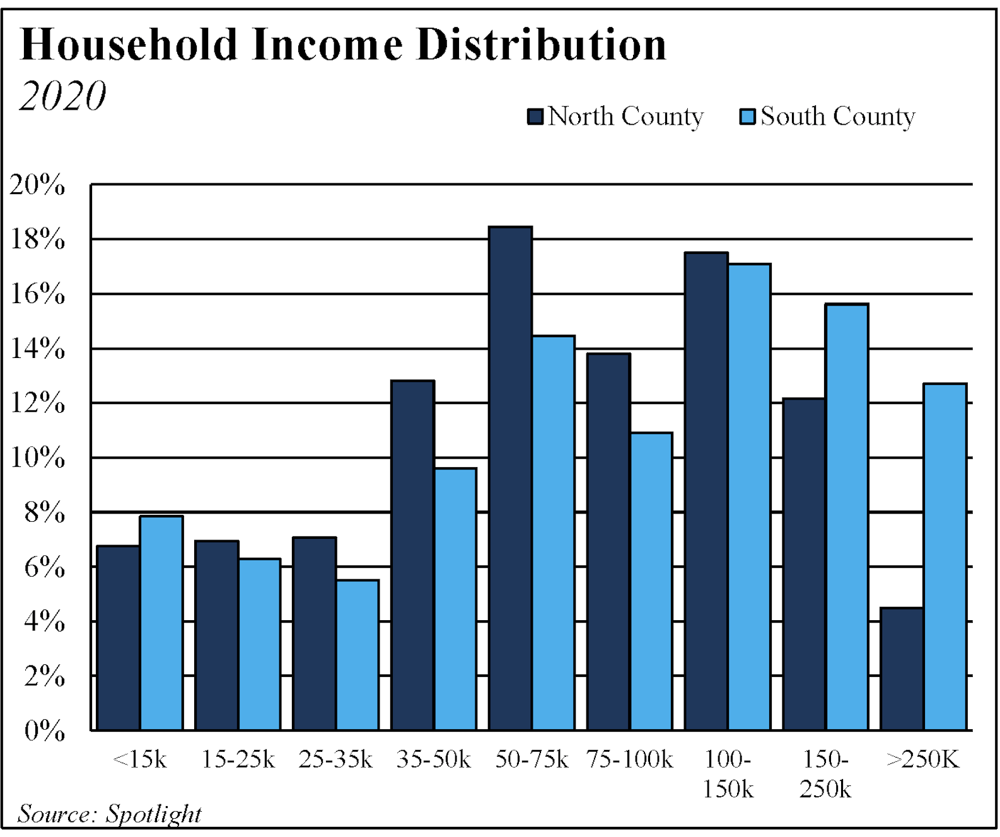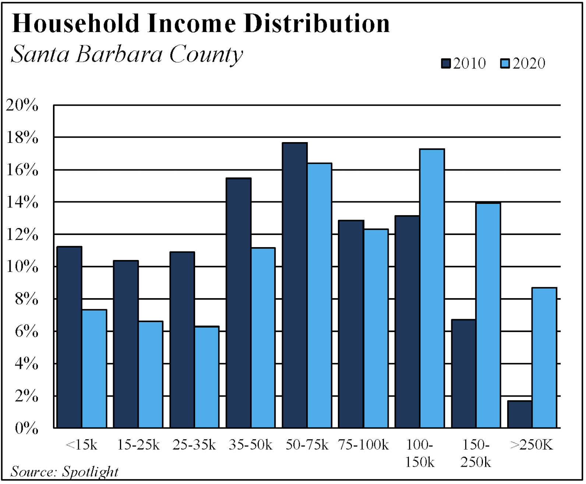
Across Santa Barbara county, changes in nominal median household income ranged from 11% in Guadalupe to 0% in Buelton. This growth in Guadalupe of about $6,360 puts their median income at $64,222, below the median in Santa Barbara County. The County’s median income of $85,334 grew modestly by a net of $1,619, or a growth percentage of 1.94%. Consistent with prior years, Goleta has the highest median household income in Santa Barbara County at $109,361 and Lompoc has the lowest, at $61,020.

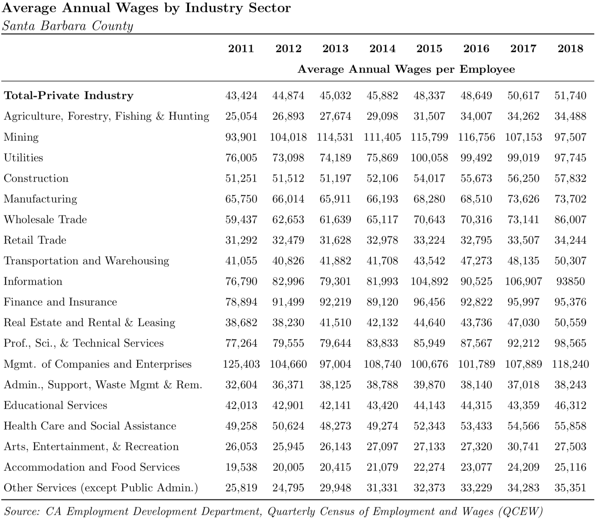
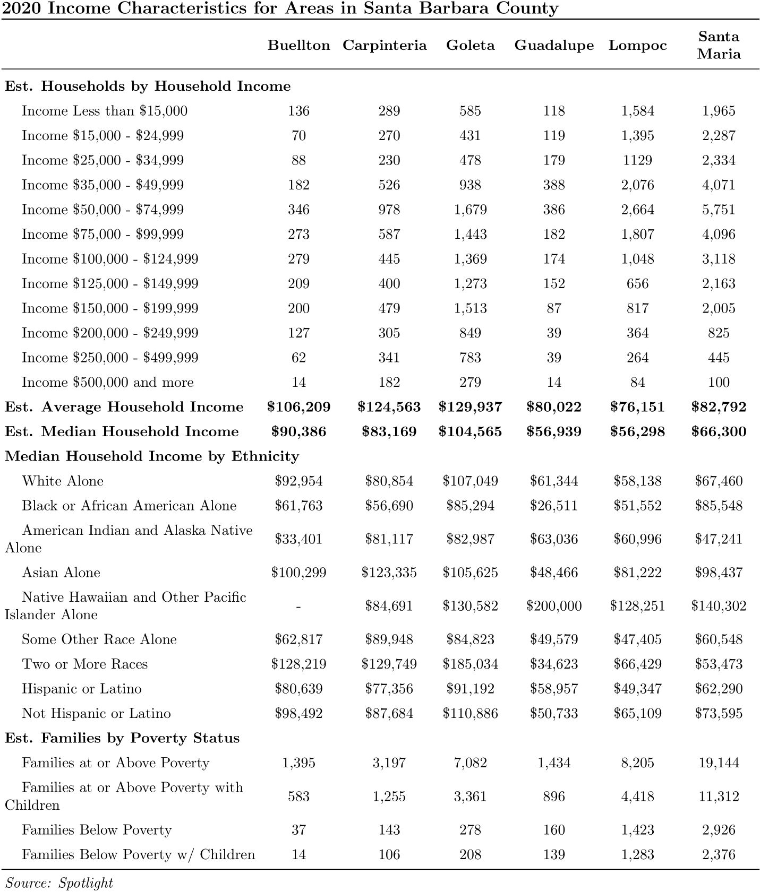